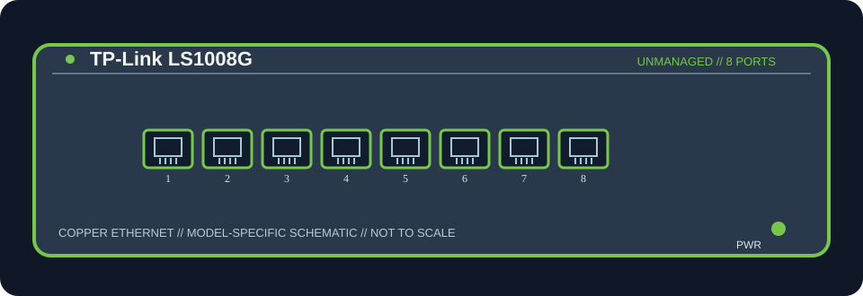

[ MODEL-SPECIFIC NETWORK HARDWARE ]
TP-Link LS1008G 8-Port Gigabit Desktop Switch
Eight auto-negotiating 10/100/1000BASE-T RJ-45 ports; no dedicated uplink, optical port, or PoE. This is the unmanaged LiteWave LS1008G, not a TL-SG108E smart switch or any PoE SKU. TP-Link overview and versioned data-sheet power figures differ; retain the revision-specific caveat.

MODEL IDENTIFICATION: LS1008G (manufacturer download lists UN hardware version 4.6; check device label). Match the complete model and hardware revision on the label before applying specifications.
Exact specifications and compatibility
| Cataloged model / revision | LS1008G — LS1008G (manufacturer download lists UN hardware version 4.6; check device label) |
|---|---|
| Dedicated subcategory | Unmanaged switches |
| Ports and line rates | 8 × 10/100/1000BASE-T RJ-45; nominal negotiated link rate up to 1 Gb/s per port. |
| Switching capacity | 16 Gbps manufacturer switching fabric; this is aggregate switching capacity, not measured application throughput. |
| PoE | No PoE input or output is specified for this model. |
| Uplink and media | No dedicated uplink or optical cage; all ports are copper RJ-45 and any port may connect upstream. Use standards-compatible twisted-pair Ethernet cable. |
| Power | External adapter output 5 V DC / 0.6 A. The linked LS1008G V4.6 family data sheet gives maximum consumption of 4.08 W; the product overview page reports 2.7 W, so confirm version-specific power against the unit label and bundled adapter. |
| Form factor | Fanless compact plastic desktop enclosure, 127 × 66.5 × 23 mm; no rack mount. |
| Host compatibility | Works with standard copper Ethernet hosts and network equipment; no host driver or operating-system configuration is required. Verify the hardware version and power-adapter output before installation. |
| Compatibility caveat | Eight auto-negotiating 10/100/1000BASE-T RJ-45 ports; no dedicated uplink, optical port, or PoE. This is the unmanaged LiteWave LS1008G, not a TL-SG108E smart switch or any PoE SKU. TP-Link overview and versioned data-sheet power figures differ; retain the revision-specific caveat. Confirm regional SKU, hardware revision, adapter rating and supported cable category. Negotiated PHY rate does not guarantee end-to-end throughput. |
| Management / drivers | Unmanaged Layer 2 switch; no switch configuration interface or host driver is required. Do not infer VLAN, routing, or managed-switch capabilities. |
Model-specific notes
Eight auto-negotiating 10/100/1000BASE-T RJ-45 ports; no dedicated uplink, optical port, or PoE. This is the unmanaged LiteWave LS1008G, not a TL-SG108E smart switch or any PoE SKU. TP-Link overview and versioned data-sheet power figures differ; retain the revision-specific caveat. The switching-capacity figure is the manufacturer's aggregate fabric rating, not a benchmark. An upstream router or switch is needed for access to other networks.
Manufacturer and data-sheet sources
- TP-Link LS1008G official product specificationsManufacturer product documentation for the exact model/revision and its specifications or technical data sheet.
- TP-Link Home/Office Ethernet Switches official data sheet (includes LS1008G V4.6)Manufacturer product documentation for the exact model/revision and its specifications or technical data sheet.
Specifications apply to the stated model/revision and documentation. Confirm the physical nameplate and bundled power supply before use; near-name product variants may differ.